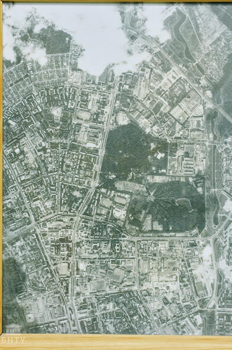
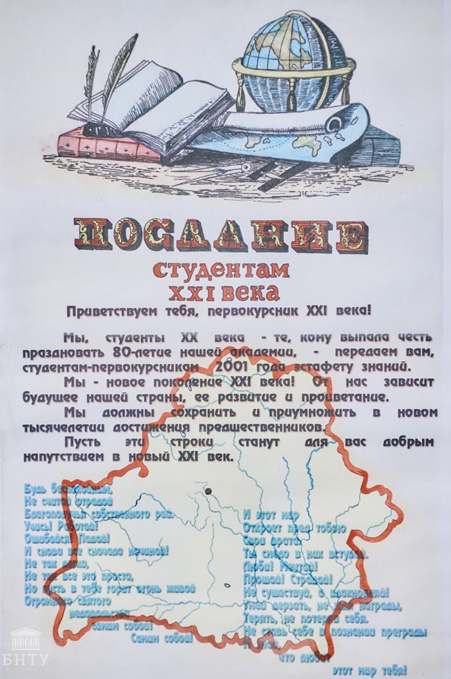

В 1975 году холдинг «БелОМО» вручил вузу необычный подарок: фотографию БНТУ прямо из космоса, изготовленную сотрудниками. Презент был преподнесен по случаю 75-летнего юбилея университета. Такой же подарок решила сделать и южно-корейская делегация, приехав с визитом в БНТУ. На 95-летие вуза партнеры из Южной Кореи передали фотографию университета из космоса, только уже в цветном варианте.
Двадцать лет назад студенты БНТУ на юбилее университета передали послание от студентов XX – начала XXI века. В нем говорится, что от нас зависит будущее страны, ее развитие и процветание, также они написали поздравление с 80-летием, оригинал которого хранится в музее университета. Кроме того, в 2008 году вместе с президентом Республики Беларусь А. Г. Лукашенко студент БНТУ Виталий Тофелев участвовал в закладке капсулы времени при начале строительства студенческой деревни на Петровщине. К слову, во время учебы молодой человек состоял в эстрадно-вокальном коллективе, сейчас у него собственная музыкальная группа.
Основная цель конкурса «Золотая литера» – всемерное содействие развитию печатных средств массовой информации Республики Беларусь, актуализация значимых тематических направлений деятельности печатных СМИ по реализации государственной информационной политики, повышение профессионального и идейно-содержательного уровня печатных СМИ, стимулирование творческой деятельности журналистов и других творческих работников, занятых в процессе производства печатных СМИ. Бывшему президенту Республики Казахстан Назарбаеву Нурсултану Абишевичу в 2012 году было присвоено звание почетного профессора БНТУ. Это звание дается за высокий вклад в развитие университета на совете вуза. Бывшему президенту Грузии Георгию Маргвелашвили в 2017 году также был вручен диплом почетного профессора БНТУ за активное содействие развитию и укреплению дружественных связей с Республикой Беларусь и партнерских отношений с университетом в сфере образования, науки и производства. Многие студенты и преподаватели являлись участниками Великой Отечественной войны. В музее БНТУ можно найти изданную кафедрой истории белорусской государственности книгу «Они сражались за родину». Также в музее размещен стенд, посвященный героям вуза в Великой Отечественной войне. Жорес Иванович Алфёров – выдающийся ученый, лауреат Нобелевской премии, добившийся всемирного признания результатов своих исследований в области физики. В конце 40-х годов ХХ века он учился в нашем вузе на энергетическом факультете. Сейчас в БНТУ именем ученого названа лаборатория техники высоких напряжений кафедры «Электрические станции», а также учреждена стипендия для одаренных студентов и аспирантов энергетического факультета. Она назначается студентам 3–5 курсов энергетического факультета очного отделения, которые за весь период обучения имели только отличные оценки, проявляли себя в научно-исследовательской работе. Для аспирантов следующие требования: оценки выше семи и наличие не менее четырех научных публикаций